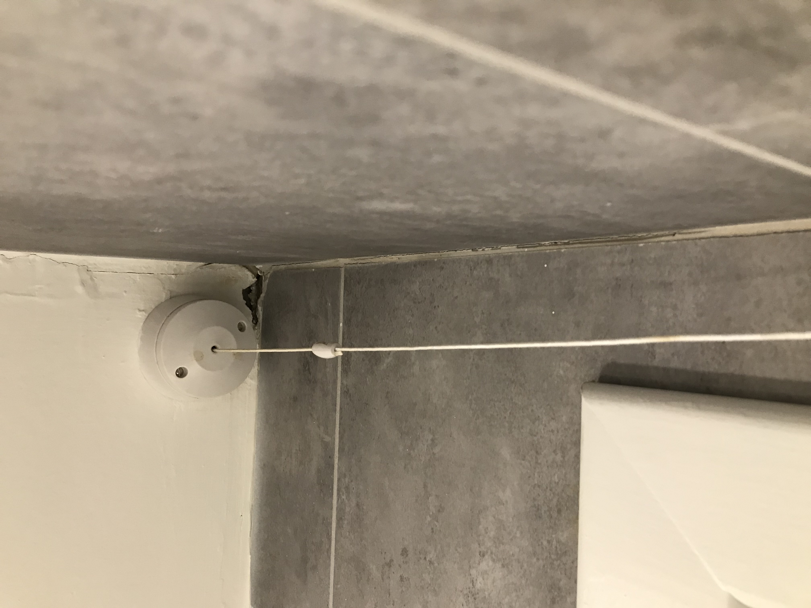
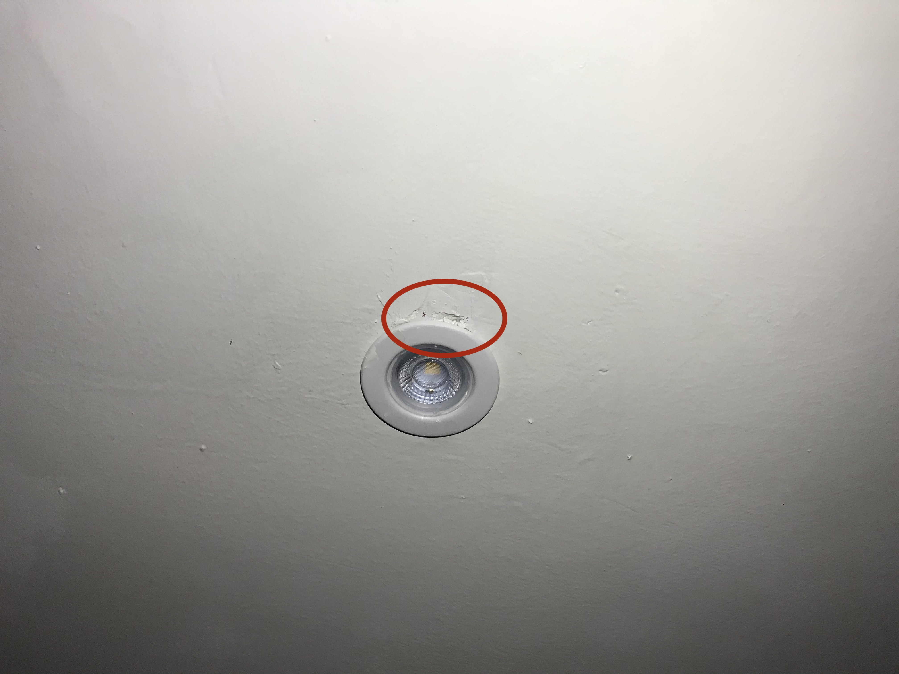
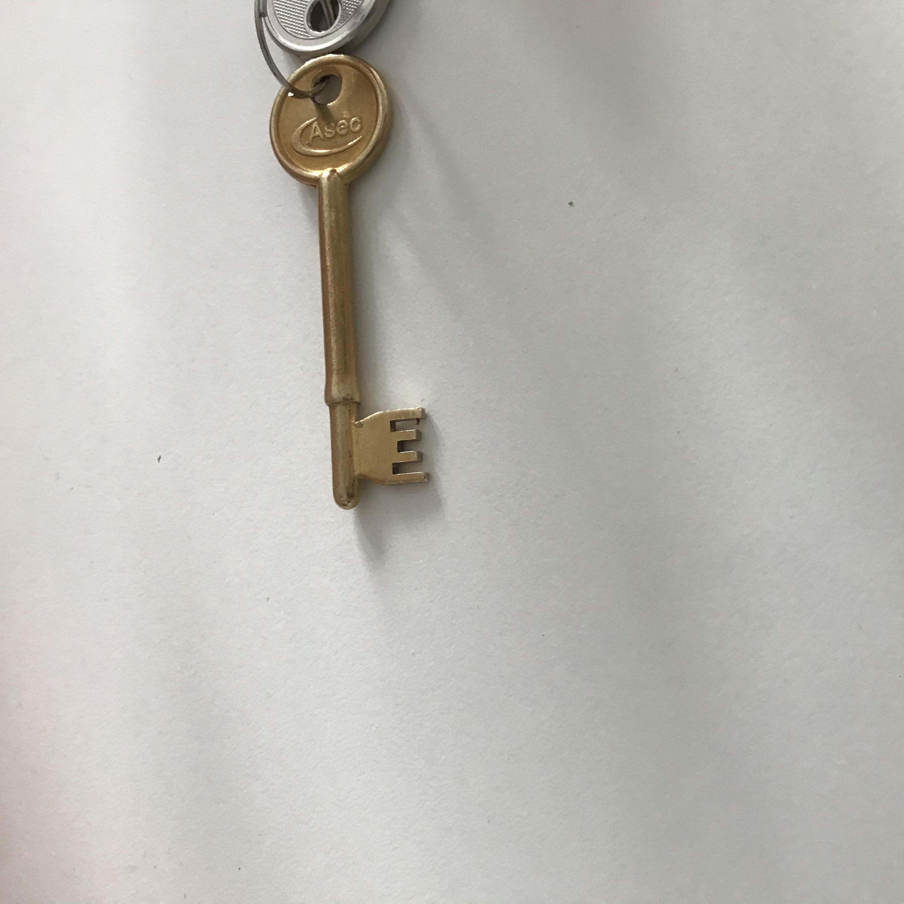
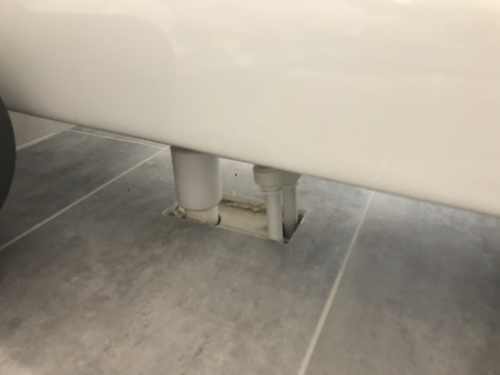

Just flat things
This is a list of things that are broken or were not functioning when I moved in.
The wall in the living room is cracking

The boiler makes a loud noise every couple minutes
The bathroom sink doesn’t work well
The sink doesnt drain as fast as the water fills up. This problem does not occur in the kitchen. This occurs even with the sink open.
The joints in the bathroom aren’t finished
The joints in the bath don’t hold when using the bath
The ceiling in the bathroom is cracked
 
The windows don’t open because of the blinds
It also damages the blinds
The fan in the kitchen does not work
The door lock seem unsafe
This is not broken, but the lock on the door is inconvenient for 3 reasons:
- It looks very unsafe and easy to pick
- It prevents the door from closing automatically
- It cannot be open from the inside without the key

The fan in the bathroom does not work
The tiles in the bathroom leave holes through the walls
Isn’t this a problem with humidity sipping into the walls?

